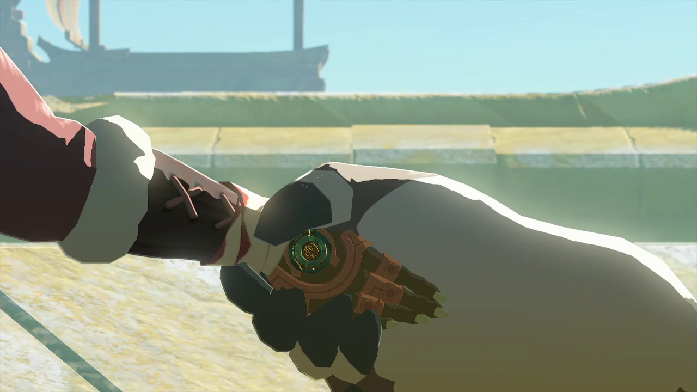

图：游戏实机截图——风之贤者（图片来源：Zelda Wiki，本站自托管图片）。
先说结论：这座神殿难在哪
风之神殿的本体是一艘飞在天上的船，利特族传说里的“风暴方舟”。暴风雪的源头就在船舱里：要打开甲板中央的舱口，先得让五座风车全部转起来。好消息是五座风车没有固定顺序，地图上标出来之后想先开哪座就开哪座；坏消息是图林必须全程在场——没有他的风，风车一座也转不动。船舱里不冷，甲板上很冷；船身侧面还有门炮会朝你开火。Boss 是冰封三头龙科盖拉，打法就一句话：弓箭点掉它身上三处弱点，坠地之后近战输出。打完拿心之容器和风之贤者誓言，图林正式成为你的贤者伙伴。
前置与准备：防寒与冰柱
进神殿之前，先把主线“利特村的图林”做到图林加入队伍。没有图林，神殿大门都开不了。准备清单不长，但缺一样都会卡住：
- 两级防寒：甲板和船外是极寒，至少两级防寒才站得住。利特村商店卖雪羽套装（上衣和裤子各一级），或者带够防寒料理和防寒药。船舱内部不冷，进舱之后可以换回输出装。
- 木材和打火石：船上不少地方被冰封着，搭个篝火融冰是最省事的办法。木材 + 打火石随身带几份。
- 箭要带足：五座风车本身不怎么耗箭，但 Boss 全程靠弓箭打弱点，至少备一壶箭再上船。
- 精力：上升岛链一路滑翔加攀爬，精力条短的话多带点精力料理。
怎么上船：上升岛链
从利特村出发，跟着图林一路爬上海布拉山，再沿着天空中的“上升岛链”往上走。这条路由碎裂的平台和浮空船组成，图林的风能帮你滑得更远。走到链条顶端附近，先把卡哈塔乌姆神庙开了当传送点——这一步别省，万一在风暴里掉下去或者死了，不用从头爬一遍。继续乘浮空船绕到风暴中心，从风眼正上方跳下去，就落在风暴方舟的甲板上。
先开终端：五座风车全标在地图上
落到甲板上，先别急着钻船舱。甲板中央舱口旁边有个绿色终端，触碰它做两件事：第一，在神殿里建一个传送点；第二，把五座风车的位置全部标在你的地图上。之后按地图标记走就行，卡住哪座就先换另一座，顺序完全自由。神殿分三层：1F 是甲板和船舱上层，B1 是甲板下的船舱，B2 是船底。看地图时注意切换楼层，别在 1F 找 B2 的风车。
五座风车逐个解法
五座风车的核心操作都一样：走到风车面前，让图林对它吹一口气。但每座风车前面都挡着一道机关，下面按位置逐个讲。
| 风车 | 位置 | 关键操作 |
|---|---|---|
| 船头高塔 | 1F 北侧塔顶 | 中央风柱升空，究极手拉开石门，躲激光下去 |
| 东侧铁门 | 1F 东侧房间 | 冰柱粘到断杠杆上当把手，拉开铁门 |
| 齿轮联动 | B1 船舱 | 冰柱横搭在两组齿轮之间，让齿轮联动开门 |
| 冰面缺口 | B1 船舱 | 图林送风滑翔过冰隙，石板加风力开门 |
| 船底 | B2 船底中央 | 从甲板或 B1 缺口滑翔到船底，清掉士兵魔像 |
船头高塔：风柱升空，开石门躲激光
甲板中央有一股很强的上升风柱，踩上去能升到最高处。往北看，塔顶有两扇大石门，用究极手拉开，跳进去。下面是个激光坑：先蹲下或贴边攀爬躲开红色激光，北侧壁龛里就是第一座风车，让图林吹它。南侧壁龛有个宝箱，里面是士兵之刃，顺手拿了。
东侧铁门：冰柱就是杠杆把手
1F 东侧房间门口有个断掉的杠杆，铁门打不开。地上就有冰柱：用究极手抓一根冰柱，粘到杠杆断口上当把手，再拉动杠杆，铁门就开了。风车就在门里。对面房间也被冰封着，融冰进去有宝箱，别漏了。
齿轮联动：冰柱搭桥，让两组齿轮一起转
下到 B1 船舱，有个房间墙上有两组齿轮，转不到一起，门打不开。办法还是冰柱：射一根下来或者捡现成的，用究极手把冰柱横搭在两组齿轮之间，让它们联动起来，旁边的门就开了，风车在里面。
冰面缺口：图林送风滑翔，石板加风力开门
B1 另一处要过一道冰面缺口：叫图林吹一股风，借着风滑翔过去。过去之后有块石板机关，把石板立在机关上，再让图林对着石板吹风，门就打开了，爬上去就是风车。注意船身侧面的门炮会朝这边开火，别在开阔处发呆。
船底：滑翔到船底中央
最后一座在 B2，也就是船底。从甲板边缘或者 B1 东侧的缺口滑翔下去，借图林的风飘到船底中央。风车旁边有个士兵魔像守着，先清掉再让图林吹风车。五座风车全转起来之后，回甲板中央开舱口，准备打 Boss。
Boss：冰封三头龙科盖拉
打开舱口下去，就是冰封三头龙科盖拉。它是条长着三个脑袋的冰龙，在空中盘旋，弱点在它身体上的三处发光部位。
1弓箭点弱点：它飞过头顶时，用弓箭逐个射它身上的三处弱点。每打碎一处它就晃一下，三处全碎，它直接从空中坠落。
2坠地后近战输出：它摔在地上动弹不得的时候，冲上去用近战武器猛攻，这是整场伤害最高的时间。
3它飞起来就拉开：它会俯冲、召唤冰柱、放出龙卷风。俯冲和冰刺落点都别站着，图林的风能帮你在空中调整位置、追上它。
4重复：它重新飞起后，再射弱点、再等坠落，循环两到三轮就能打完。
这场 Boss 战拼的是箭法不是装备，弓箭带足比带一把好武器更重要。多连弓在这里很好用，一箭能同时蹭到多个弱点。别在它俯冲的直线上站着，横向跑开就行。
奖励与后续：风之贤者誓言
打完科盖拉，拿一颗心之容器，再和图林对话，得到风之贤者誓言。从此图林可以随时召唤到身边，他的风之力能在滑翔时给你一股加速，赶路、爬山、追空中的东西都好用。四座神殿没有固定顺序，风之神殿打完之后，去火、水、雷任意一座都可以，贤者能力是叠加的，集得越多越顺。

图：游戏实机截图——林克与图林结下风之贤者的誓言（图片来源：Zelda Wiki，本站自托管图片）。
哈里的取舍：三件容易翻车的事
第一，先开卡哈塔乌姆神庙再进风暴。上升岛链爬一遍要十几分钟，神庙传送点就是后悔药。没开传送点就跳风眼，掉下去一次就得重爬，心态先崩一半。
第二，防寒只在室外要。很多人穿着雪羽套全程打完，输出低得打 Boss 磨半天。船舱里不冷，进舱就换回输出装，只在甲板上才需要防寒。
第三，冰柱别全融了。杠杆和齿轮两处机关都要冰柱当零件，看到冰柱先想想是不是机关要用的，融冰开宝箱是其次。冰柱没了还得现找，浪费时间。
一句话总结
先开卡哈塔乌姆神庙，跳风眼上船，触碰终端标出五座风车，冰柱修杠杆、冰柱连齿轮、滑翔去船底，五座全转开舱口，弓箭点掉科盖拉三处弱点，拿心之容器和图林的誓言走人。